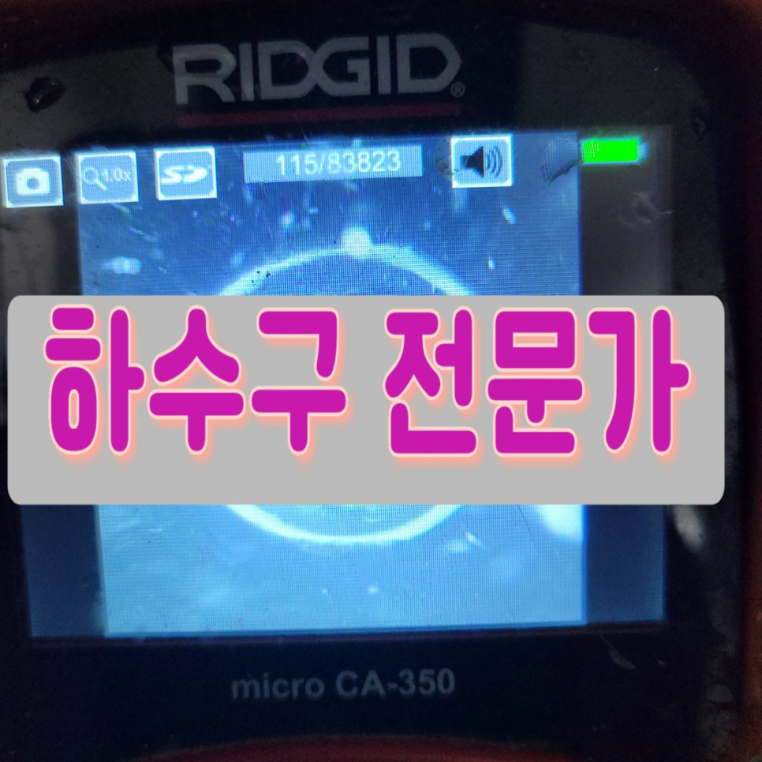
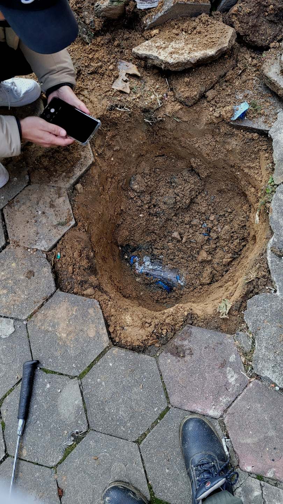
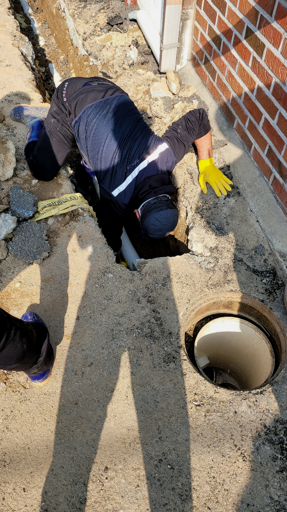
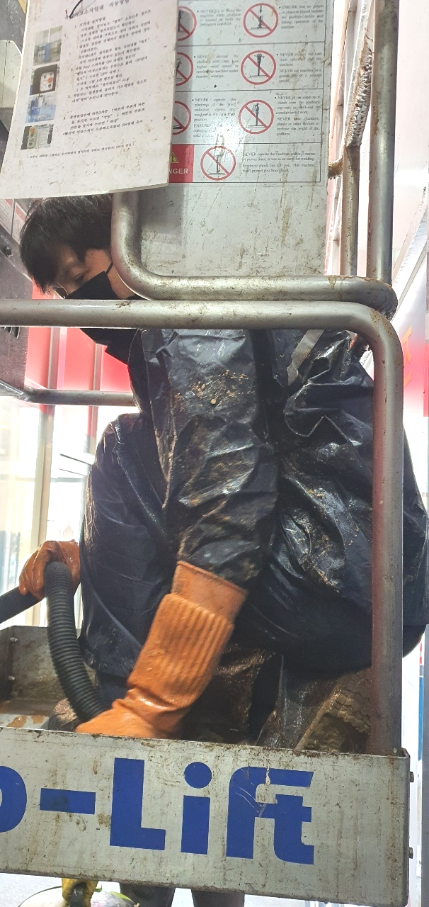
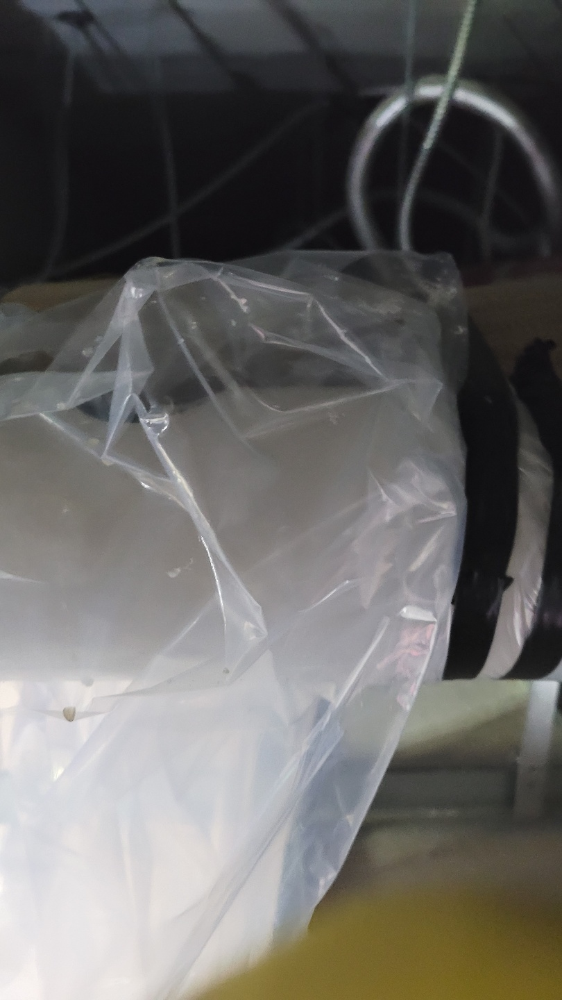
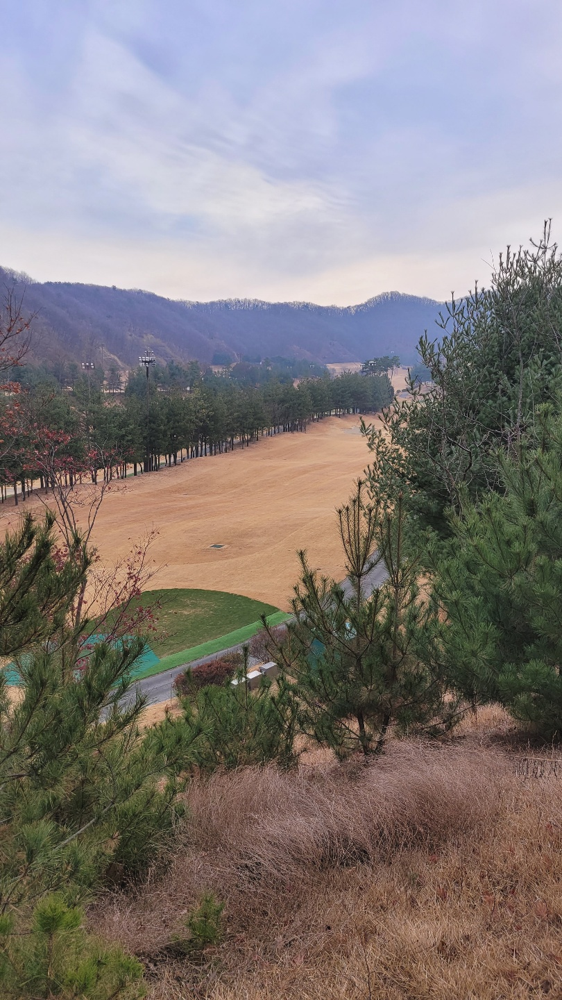
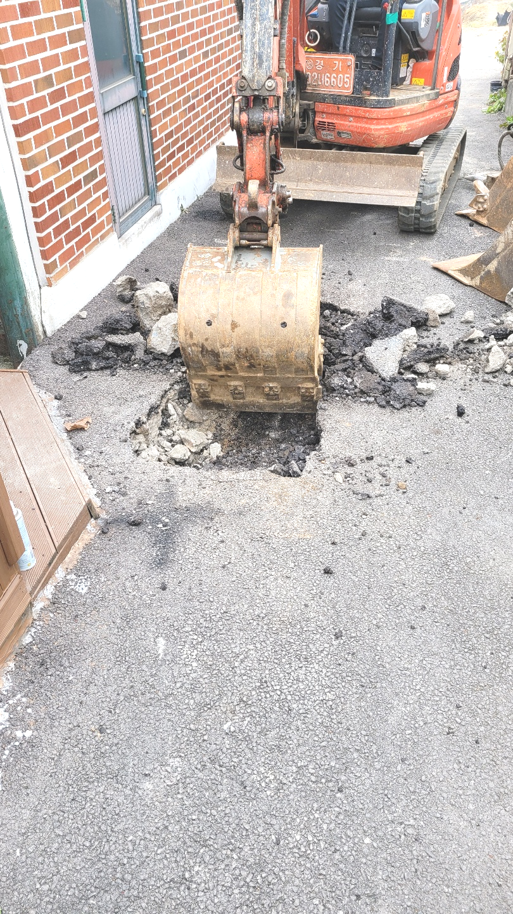

🏠 동탄 방교동 공장 맨홀하수구역류 하수관고압세척 전문업체에맡기세요
인천 싱크대막힘 전문 시공 후기

📋 작업 개요
- 위치: 인천
- 서비스 유형: 싱크대막힘, 변기막힘, 하수구막힘, 배관막힘, 맨홀막힘, 역류해결, 뚫는업체, 배관청소, 고압세척
- 작업 일시: 2023. 9. 20. 23:36
- 업체명: 하수구수사대 (010-5615-2118)
🔍 문제 상황
안녕하세요.
설비전문업체 "하수구수사대"를 찾아주셔서 감사합니다.
우리는 가정이나 직장에서 의식하지 못하고 다양한 설비시설 특히 배수구시설을 접하고 살아갑니다. 싱크대,변기,세면대 등 우리 삶 속에서 깨끗하고 간편하게 이용하고고 있는 필수 시설입니다.
싱크대,세면대,변기 등 막힘등 이물질이 원인이 되어 하수구가 막힐때가 상당히 많은데요. 이물질들이 하수에 들어갔는데 제 아무리 작은 것들일 뿐이라도 점점 계속 쌓이다 보면 막힘증상이 나타나게 됩니다.
동탄 방교동 공장 맨홀하수구역류 하수관고압세척 전문업체에맡기세요

🔎 원인 분석
💡 전문가 진단: 동탄 방교동 공장 맨홀하수구역류 하수관고압세척 전문업체에맡기세요
단순 막힘 말고도 역류 같은 문제처럼 배수구에는 생길 수있는 증상들은 매우 많습니다. 그럴 때 전문 업체를 통해 뚫기도 하지만 저렴한 곳만 알아보시는 것은 오히려 나중에 더 큰 피해를 커울수 있다는 것을 말씀 드리고 싶습니다.
믿고 부른 업체가 제대로 뚫었다며 철수했는데 얼마 지나지 않아 똑같은 증상이 재발하는 경우도 어렵지 않게 볼 수 있습니다, 양심적인 배출구업체라면 이럴 때 다시 찾아가서 뚫어주어야 하는 것이 맞습니다.
대다수분들이 배관이 막힘이 발생되면 그냥 혼자 하다가 처리를 하지못하고 저희 업체를 찾게됩니다. 업체 선정을 잘해야 고객님의 피해를 줄일 수가 있습니다. 퇴수구전문 장비를 보유하고 있는지 배관 구조를 확실하게 파악할줄 알아야 합니다.
수도권 모든 지역에서 배출구경력 있는 사람들이 대기하고 있기 때문에 계신 지역이 어디든지 방문 드릴 수 있으며 아무리 심각한 상황이라도 빠르게 대처해 드리기 위해서 1시간 내에 도착을 약속합니다.
문의하시더라도 먼저 따져라도 보셔야 뒤탈 없이 해결하실 수 있어요. 가능한 투명한 곳으로 찾아보고 있으실 텐데 여유롭지 않으시다면 배수구막힘 이쪽으로 전화 주시는 것을 말씀드려보고 싶어요.

🔧 작업 과정
배수관으로 배수가 안되거나 느리게 넘치고 있다면 이러한 것들을 고쳐드리는 경력자를 찾아내서 실력자를 이용하셔야 합니다.배출구막힘 무수히도 많은 업체들이 있는데 업차마다 다른 점이 있어서 신중을 기해야 합니다.
처음에는 급한 마음에 혼자서 셀프 요법으로 해결을 하려고 했지만 얼마 지나지 않아서 아예 퇴수구가 막혀버리다 보니 아무런 소용이 없었다고 하셨습니다.
고치시다가 해결할수없어서 어쩔수없이 퇴수구배관업체를 알아보시는분들이 많이있어요 문의하실때에 자세하게 체크해보셔야 별문제없이 해결할수있어요 정직한업체들을 위주로 찾아보고있으신데 여유가없는 상황이라면 저희에게 연락주시는걸 추천해요
이와같은문제로인해 꾸준히케어 하셔야해요.하지만이것과는 다르게 하시는것조차 망설이시는데요. 퇴수구 깊숙한곳까지 직접보는게힘든 상황이원인이랍니다.
하수전문장비로 하수구안까지 볼수있기에 일반적으로 보지못했던데까지 빈틈없이확인 할수있습니다.이러한엄청난 장점때문에 실패할확률이 많이낮다라고 말할수있어요
확실하게 아는것이없기에 대처법이 생각이안나기에 손을댈수 없게되어버리죠.배출구뚫음 어떻게든하려고 하시지말고 다른해결수단을 고민하셔야돼요.
어떠한것보다 문제가발생하면 사용할수없어서 평소에생활이 불편해집니다.배출구역류를 안해야하지만 그렇게안된다면 상태가심각해집니다.
이번에 다녀온 출동 건은 상가건물에서 연락을 주신 건 없었고, 남자화장실 바닥 배관 하수 막힘이 발생된 것 같다고 건물관리인분께서 연락을 주셨습니다.


✅ 작업 완료
그동안 인천 서구 화장실 배출구 막힘 현장에 석회가 형성되는 과정에서 생활하며 배출된 머리카락 또한 엄청난 양으로 굳어있었던 모양입니다.
#하수구막힘 #하수구뚫음 #하수구역류 #씽크대막힘 #싱크대역류 #오수관막힘 #하수구청소 #욕실하수구막힘 #변기막힘 #하수구뚫는비용 #싱크대수리 #화장실막힘




⚠️ 주방 싱크대 배관 막힘 예방 수칙
- ✅ 기름기가 묻은 식기나 프라이팬은 설거지 전 키친타올로 반드시 기름때를 닦아내세요.
- ✅ 주기적으로 싱크대 개수대에 뜨거운 물을 가득 받아 한 번에 내려 배관 내부 기름을 씻어내세요.
- ✅ 배수구 거름망을 미세한 필터로 사용하시고 음식물 찌꺼기가 틈으로 새어 들지 않게 관리하세요.
- ✅ 베이킹소다와 식초를 뜨거운 물과 함께 일주일에 한 번씩 부어주면 배관 살균과 막힘 예방에 좋습니다.
💡 핵심 정리
- 확실한 장비 작업(내시경 점검 및 샤프트 스케일링)으로 원인을 뿌리 뽑습니다.
- 작업 후 1년 이내에 동일한 부위 재발 시 100% 무상 A/S 서비스를 보장합니다.
- 서울 · 경기 · 인천 전 지역에 24시간 언제든 긴급 출동할 수 있도록 항시 대기 중입니다.
❓ 자주 묻는 질문 (FAQ)
🚨 인천 싱크대막힘 문제로 고민이신가요?
정확한 원인 진단과 확실한 시공으로 재발 없는 해결을 약속드립니다.
24시간 긴급 출동 | 서울 · 경기 · 인천 전지역 | 1년 내 재발 시 무상 A/S